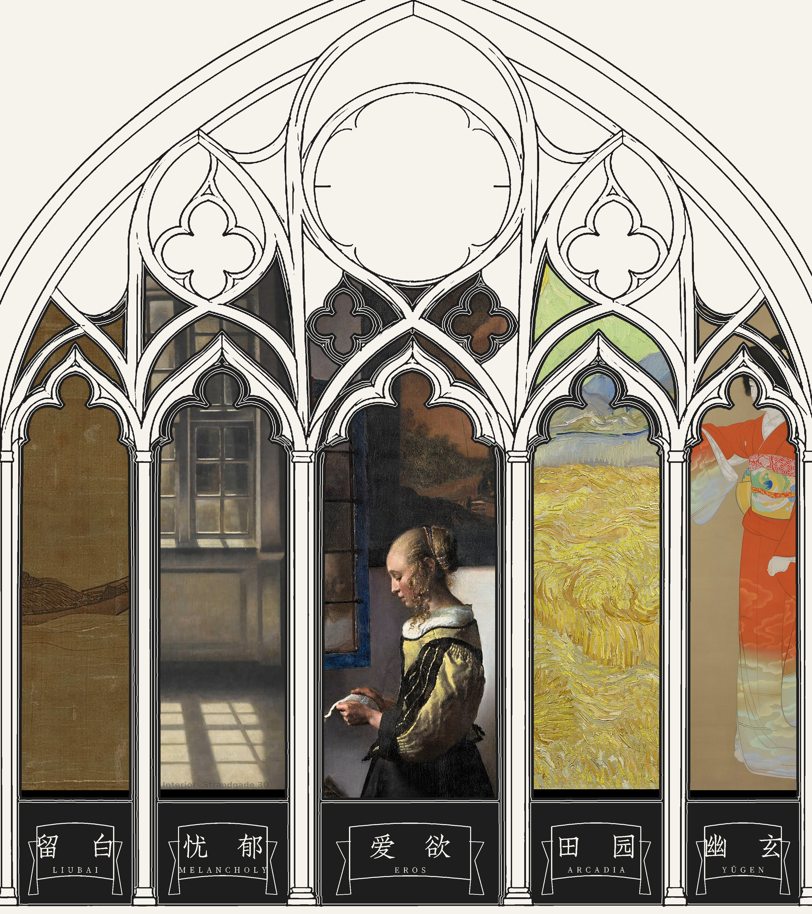

P3 → P4 / CAMERA TEST
从彩窗，
走进中殿。
当前选中的专题保留在远端彩窗。镜头拉开，中央通道与两侧教堂长凳依次进入视野；每侧的一条长凳代表一条细分审美词条。
此处引用 P3 v3 原有图片作为过渡锚点，不重画 P3。结构示意暂用 8 个虚位，不声称已接通飞书词条。

P3
P3 · 彩窗 v3
独立打包预览未附带原有彩窗资产在仓库原目录下可自动引用当前选中的专题保留在远端彩窗。镜头拉开，中央通道与两侧教堂长凳依次进入视野；每侧的一条长凳代表一条细分审美词条。
此处引用 P3 v3 原有图片作为过渡锚点，不重画 P3。结构示意暂用 8 个虚位，不声称已接通飞书词条。

从 P1 落向 P2、停在 P3 玫瑰窗中心、延续到 P4 中殿。此处保留全站索引入口；Le Pater 五徽章索引属于独立设计任务，本次不重画。
Cool Detachment
清冷，不是一个人没有情感，而是ta的情感拥有自己的世界。
清冷 · 清冷的视觉语言不是简单地把颜色调冷。
一 / 图册卷首
白色、冰雪、空旷都可以让人感到冷，但医院走廊也可以很冷。
真正的问题不是为什么某些事物很冷，而是为什么有些冷让我们想逃离，另一些冷却让我们忍不住凝视。
清冷，不是一个人没有情感，而是ta的情感拥有自己的世界。
从一个人的目光到一片静止的雪地，真正使它成立的不是“冷”这个表面标签，而是克制如何把强烈的存在留在画面之内。
十五米宽的装置里，数百公斤轻盈的羽毛被气流吹起、缓缓落下，仿佛一场没有寒意的暴风雪。洁白的空间让这场人造降雪显得近乎不真实。
《Snow》把“冷”做成可以走进去的氛围。你开始凝视羽毛的轨迹，而不是想找一件外套。
厚雪抹平了地面细节，黑色树影孤零零地站在大片留白之中。尤其是《Nine Trees》（2004），九棵树在雪原上排成细细的一行。
清冷往往不是生命消失了，而是生命的温度被压低了。强烈的存在，被安放在一种克制的秩序之中。
清冷 · 清冷感 · 高冷 · 冷感 · 雪景 · 月光 · 冬日 · aloof · cold beauty
你仍在「幽玄」专题的座位区。返回后保持原专题、原席位、原本打开的预览册。